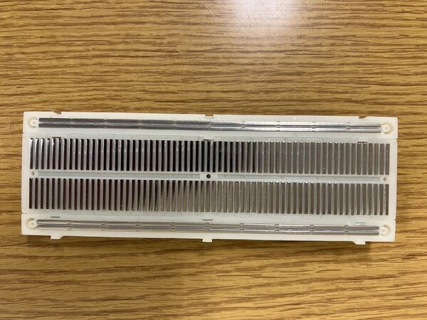
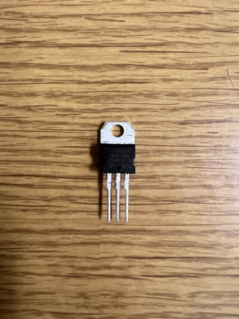

Extra Materials: Introduction to Breadboards
Contents
Extra Materials: Introduction to Breadboards#
Last updated January 7, 2023
00. Content #
Mathematics#
N/A
Programming Skills#
N/A
Embedded Systems#
LED lighting
0. Required Hardware #
1 LED
Voltage Regulator IC
breadboard
wires
1. Breadboard Connections Revised #
We will be using a breadboard throughout the labs to temporarily prototype all the experiments as it is easy to use without any soldering.
A typical breadboard looks like this:

The outer two rows on top and bottom of the board are shorted horizontally (any two points on the same row will have the same potential). The remaining areas are shorted column wise till the ridge at the middle. We can understand this clearly by seeing the internals of the breadboard.

Some Important Notes:#
Most of the electronic components that we use in the lab will run only on either 3.3V or 5V DC.
If you are not sure about the safe operation of a component or any equipment in the lab. Please contact a TA.
The longest leg of an LED is the anode which should be connected to the positive.
Verify with any of the teaching staff before powering the circuit.
Exercise 1: Wiring an LED on a breadboard
The picture below shows a voltage regulator IC which we will use to regulate the voltage to protect our circuit. We need this regulator as the battery we are using to power the circuit is 9 volts and we will be using this IC to drop the voltage to 5V.

When the IC is facing you as shown in the figure the left pin will be the input, the middle pin will be the common ground and the right pin will be the output voltage (5V with respect to ground).
Now you can start wiring the circuit on the breadboard using this circuit diagram
The circuit will look something like this.
The output of the Voltage regulator will be 5V but our LED is rated for 2.5 - 3V, so we will be using a 220 ohm resistor in series with the LED so that it will not be damaged.

If your circuit connections are correct, the LED should light up.
2. Submitting the extra materials #
This exercise does not need to be submitted virtually. Upon completion, raise your hand for your instructor to come and check your breadboard over.